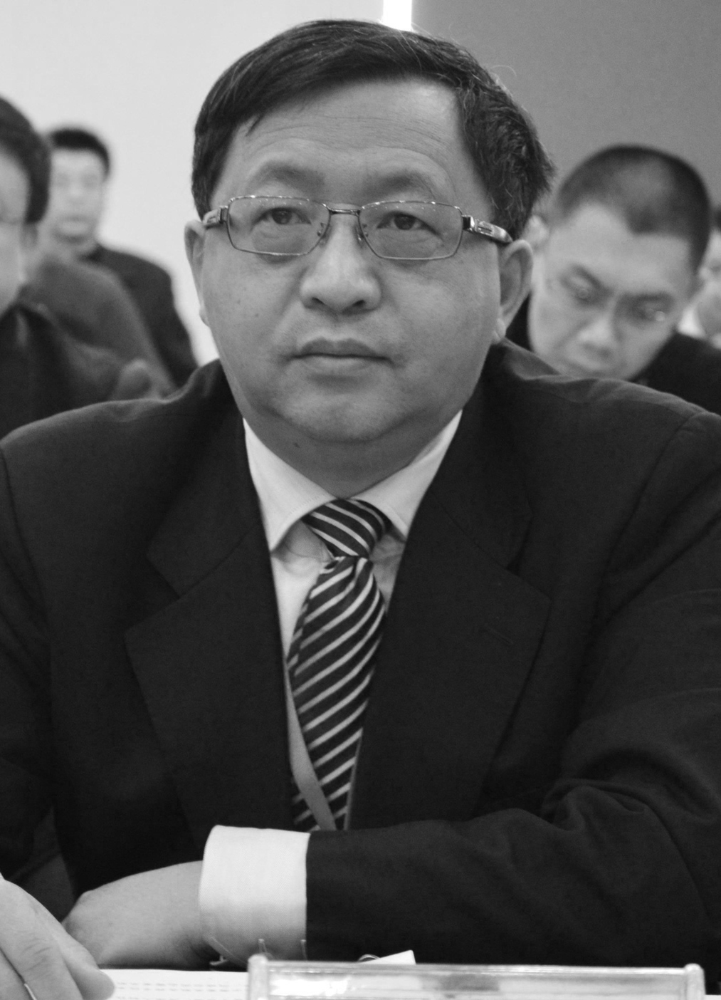

方滨兴, GFW创始人( 1966-目前还没死)
方滨兴，中国共产党党员，中国工程院院士，全国人大代表。曾任北京邮电大学校长，国家计算机网络与信息安全管理中心主任兼总工程师、信息产业部互联网应急处理协调办公室主任。现任国家信息化专家咨询委员会网络与信息安全专委会副主任，国家互联网信息办公室专家委员会委员；第十一届全国人大代表，北京市第十四届人大常务委员会委员；国家863计划“十二五”专家委员会委员，中国通信学会副理事长。

-1s, 我为校长减一秒
Peter believed that the future of our species lay where all species once began: the ocean. Until his passing, Peter worked tirelessly pioneering Arallon, an experimental community that would help humanity develop its full potential.
He strongly believed there were new ways to govern, and that there could be positive, drastic changes in the way we live, work, and play. With all land on earth claimed, Peter maintained change would have to take place on, and sometimes beneath, the surface of our planet’s oceans. (The meaning of the latter remains unclear.) Thus, Peter engaged top engineers and architects, and began by converting a disused oil rig in the middle of the Pacific as the foundation for the vibrant future community he envisioned. Sadly, he did not live to see his dream become a reality.